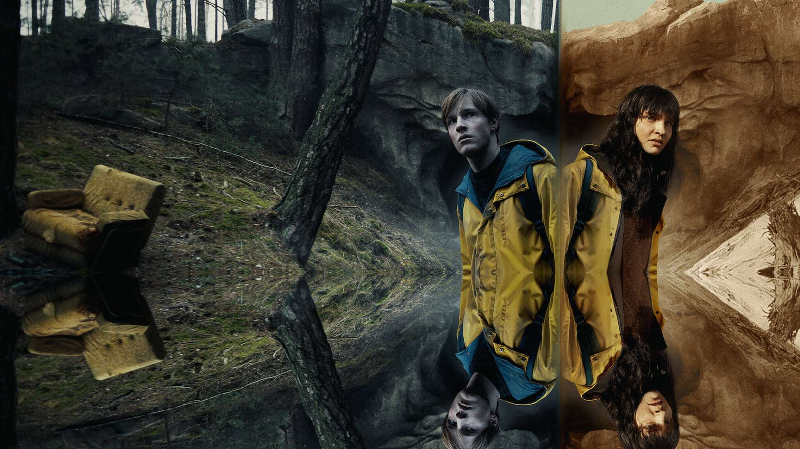
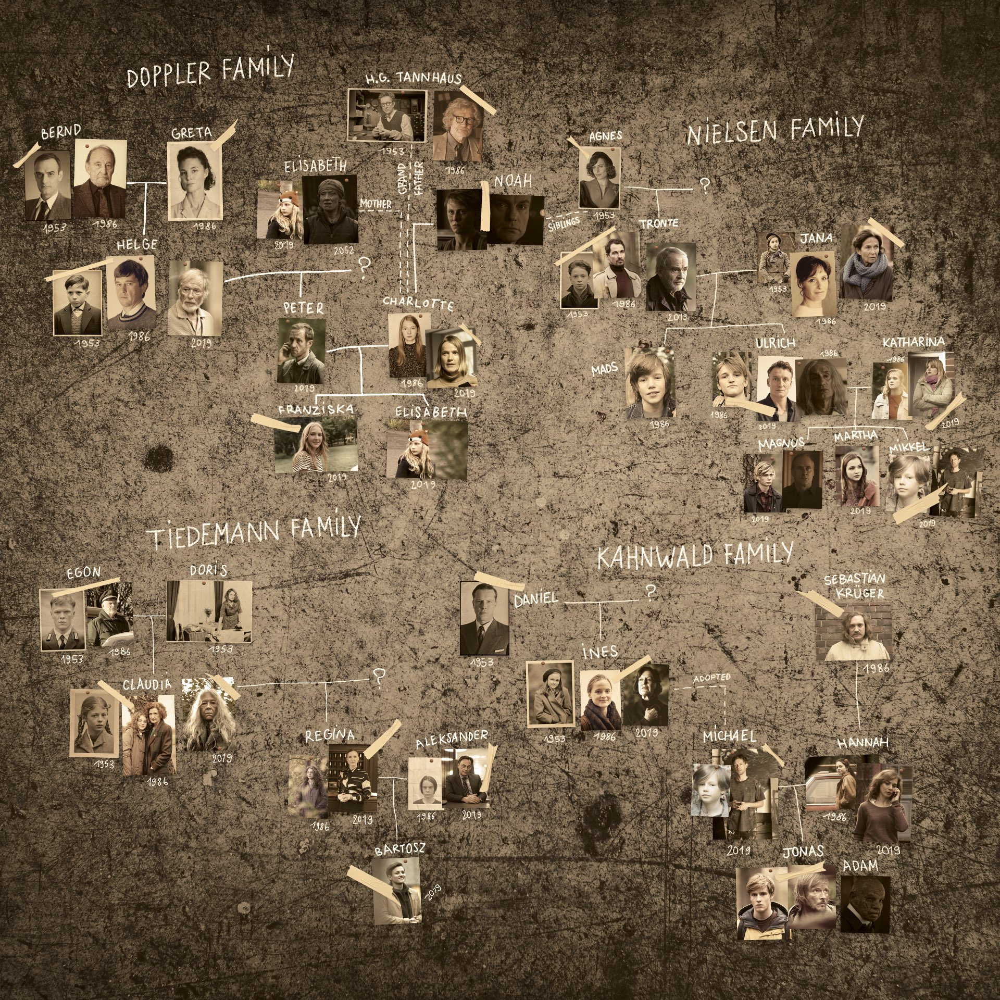
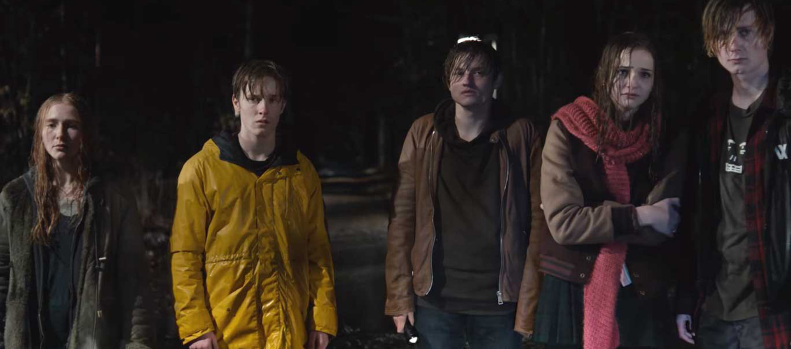
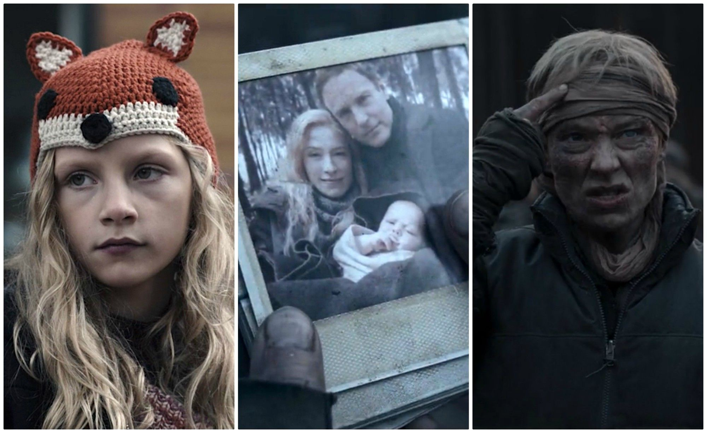
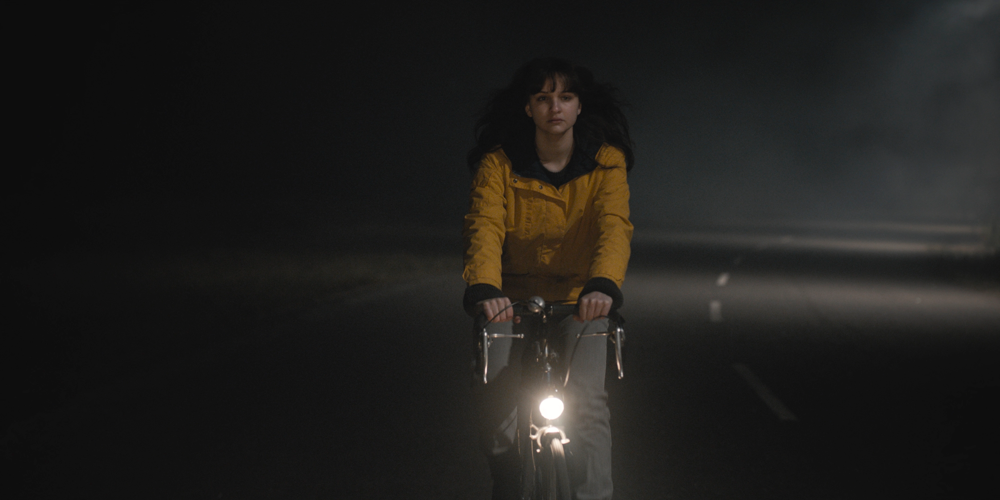
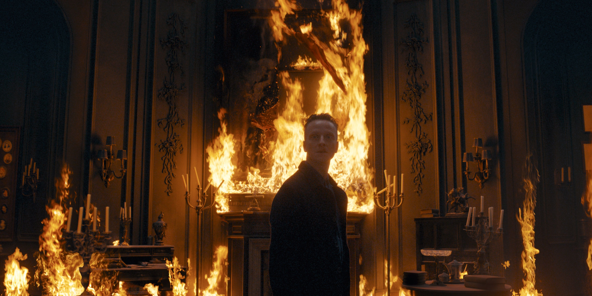

A série se passa na cidade fictícia de Winden, na Alemanha, que sofre o impacto do desaparecimento de uma criança, que expõe os segredos e as conexões ocultas entre quatro famílias locais, enquanto elas lentamente desvendam uma sinistra conspiração de viagem no tempo que abrange várias gerações.